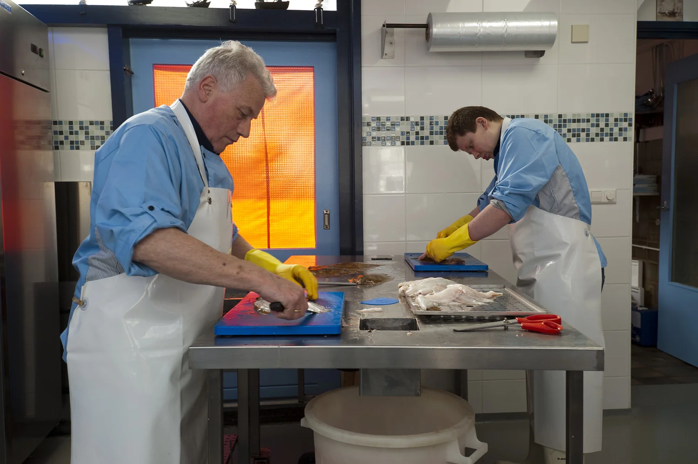

Van handkar tot familiebedrijf
Vier generaties Van Oosten, honderd jaar Noordzeevis, één winkel in Delft.

De derde generatie aan het roer
Wijnand van Oosten jr. is eigenaar van Van Oosten voor Vis. Het vak van visdetaillist is hem met de paplepel ingegoten: als kind hielp hij al met veel plezier mee in de zaak van zijn vader. Hij rondde een koksopleiding af en deed ervaring op in diverse restaurants, voordat de wens om de winkel over te nemen begon te kriebelen.
Sinds 3 september 2015 is de winkel weer volledig open, met dezelfde aandacht voor kwaliteit en klant die de familie al honderd jaar kenmerkt. Samen met zijn team bereidt hij dagelijks de lekkerste vis en gerechten voor de klanten in Delft.
Kom langs in de winkelHonderd jaar Van Oosten
Een naam wordt bekend in Delft
Cornelis van Oosten, opa van de huidige eigenaar, vent haring met een handkar door Delft, in de omgeving van de Rotterdamseweg.
De eerste bakfiets
Cornelis schaft een heuse bakfiets aan om zijn haring mee te venten.
Verhuizing naar Scheveningen
Cornelis verhuist van Delft naar Scheveningen. Naast haring kan hij daar nu ook verse vis inkopen om te verkopen.
Trouwen en een motorbakfiets
Cornelis trouwt en koopt een motorbakfiets, waarmee hij zijn ronde verder kan uitbreiden.
Terug naar Delft
In de Tweede Wereldoorlog wordt zijn woonplek onderdeel van de Atlantikwall. Cornelis verhuist noodgedwongen met zijn gezin terug naar Delft, en fietst 's ochtends vroeg naar Scheveningen om vis te halen die hij vervolgens in Delft verkoopt.
De eerste winkel
Cornelis blijft vis venten, terwijl zijn vrouw vanaf 1947 vis verkoopt vanuit een winkel in de Kwekerijstraat, waar het gezin destijds woont.
Een tweede winkel
Oudste zoon Jan opent een winkel in de Arnoldstraat. De winkel in de Kwekerijstraat sluit.
De Buitenwatersloot
Cornelis stopt om gezondheidsredenen met venten op straat en opent een winkel aan de Buitenwatersloot, het huidige adres van Van Oosten voor Vis.
De volgende generatie
Wijnand van Oosten sr. komt op veertienjarige leeftijd in de zaak, en bekwaamt zich in de avonduren verder op de Handels Avondschool.
Verhuizing Jan naar de Anthony Duyckstraat
De winkel van Jan verhuist naar de Anthony Duyckstraat, waar hij tot 2000 vis blijft verkopen.
Wijnand sr. neemt het over
Wijnand sr. trouwt, en Cornelis trekt zich terug uit de winkel aan de Buitenwatersloot.
Een rustiger tempo
Wijnand sr. wordt 65 en beperkt de verkoop tot zaterdagochtend. Opvolging is op dat moment nog niet in zicht.
Wijnand jr. neemt het stokje over
Na zijn opleiding tot kok gaat de winkel op 3 september weer volledig open onder leiding van Wijnand van Oosten jr., met groot succes dankzij de vele trouwe klanten.
Proef de traditie zelf
Kom langs aan de Buitenwatersloot en maak kennis met honderd jaar vakmanschap.